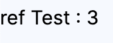

vue.js 공식문서, GPT를 통해 학습한 내용을 정리합니다.
잘못된 내용을 포함하고 있을 수 있습니다.
ref
vue.js 3버전 이후부터 HTML 페이지 내부에서 사용될 변수를 저장할 수 있는 기능이 추가되었다.
ref()로 묶어 내부에 다양한 타입의 변수 (Array, Object,..)를 선언할 수 있다.
#일반 변수 With ref
우선 <script> Tag 내부에서 ref를 사용하기 위해서 import 해준다.
<script>
import { ref } from 'vue'
</script>
다음으로 const type count 변수를 하나 선언해 주었다.
<script>
import { ref } from 'vue'
const count = ref(3);
</script>
선언한 count 변수의 내부값 3은 count.value 에 들어있는데
<template> </template> 태그 내부에서 바인딩 문법을 사용해 count 변수에 접근하고자 할 때는
{{ count.value }} 같은 형태가 아니라 {{ count }} 와 같이 접근해야 한다.
그 이유는 자동으로 ref를 탬플릿 내부에서 unwrapping 하기 때문이다.
따라서 {{ count.value }}라고 작성 시 실제로 Vue 내부적으론 count.value.value로 인식해 Undefined가 출력될 가능성이 있다.
<template>
<div>
ref Test : {{ count }}
</div>
</template>
#객체 With ref
Array, Object 타입도 똑같이 정의해주면 된다.
3개의 문자열을 가지고 있는 contents 배열을 ref를 사용해 선언해 준 뒤 v-for 문법을 이용해 차례로 <div> 태그 내부에 출력한 예제이다.
<script>
import { ref } from 'vue'
// 데이터를 객체 형식으로 정의
const contents = ref([
'ID', 'PW', 'About'
])
</script> <template>
<div class="menu">
<a v-for="content in contents" :key="content">{{content}}</a>
</div>
</template>